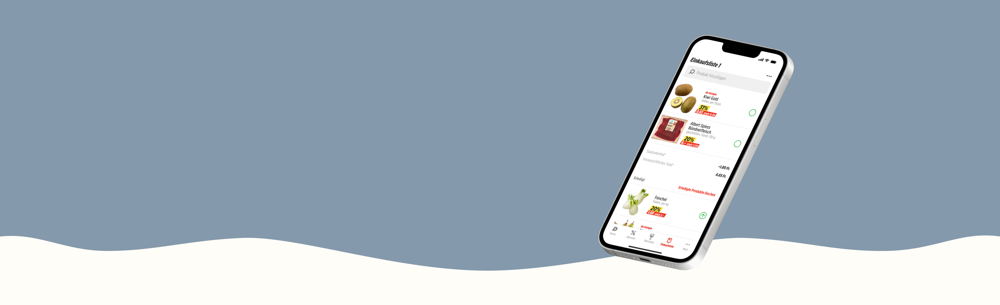
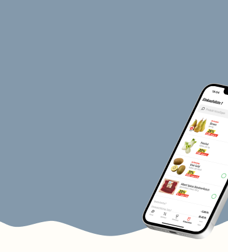
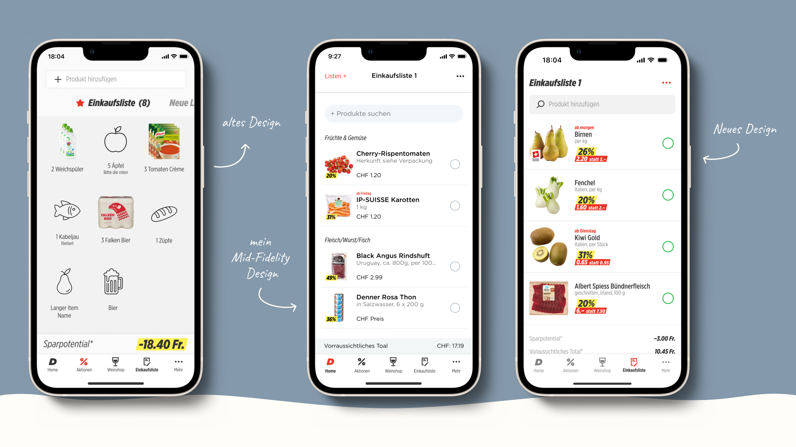
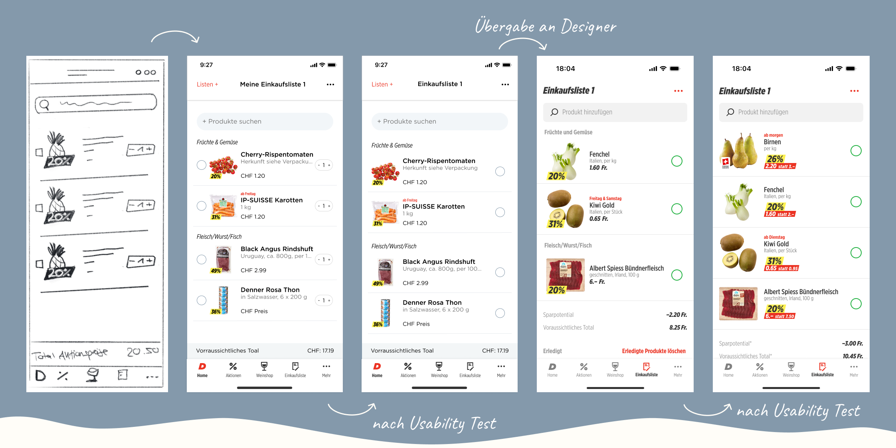
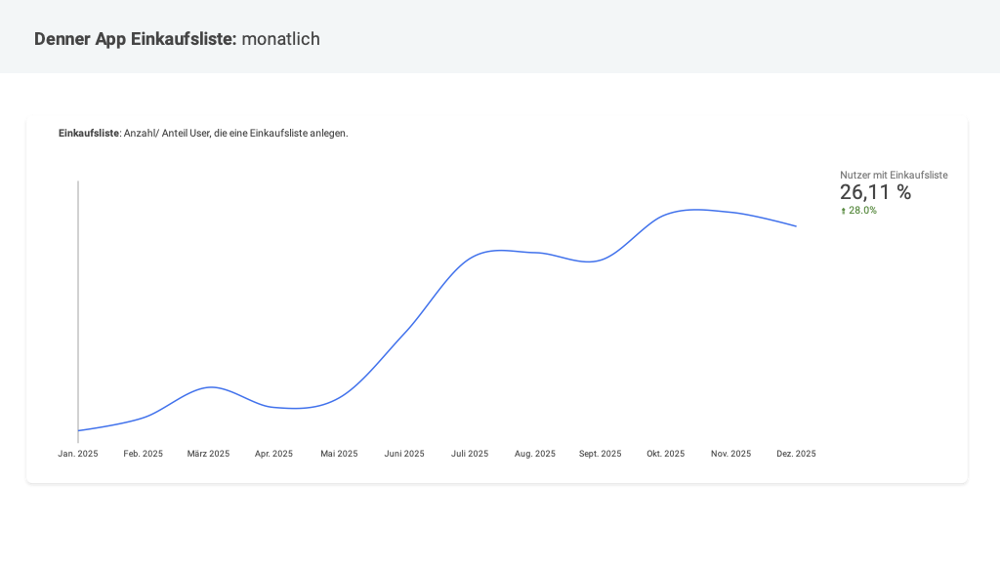

Shopping list optimization
Executive Summary
The shopping list feature showed low engagement, leading to opportunity costs and poor app ratings. Through a data-driven discovery phase and iterative design based on user feedback, I optimized the Denner app shopping list. The result:
- 28% more active users of the shopping list feature after go-live
- 90% CSAT-Score
My role:
- Project lead
- User research lead
- Requirements engineering

My tasks:
- Qualitative UX research: Who are current users and how do they experience the product today?
- UX design from low- to mid-fidelity: Redesign proposals
- Writing backlog items in Azure DevOps and running acceptance tests
- Post-launch documentation
Methods used:
Sentiment analysis
Survey
Wireframing
Iterative prototyping
User interviews
Usability testing
GA4 analysis
DISCOVER
Identify and validate the problem
Using several independent data sources, I showed that the shopping list did not meet user expectations.
- Sentiment analysis of reviews in the Google Play Store and App Store
- 8% of all app reviews explicitly mentioned the shopping list
- Exploratory in-app survey
- Question: If you had a magic wand, what would you change about the Denner app?
- 18% of respondents (n=1040) mentioned redesigning the shopping list.
EXPLORE & TEST
Design development and iterative validation
Solutions emerged from user feedback and were validated over several iterations.
- Low-fidelity design based on survey feedback
- Conducting Interviews with integrated usability test
- Iteration of the mid-fidelity design based on insights
- Presenting research findings to UX/UI designers for high-fidelity design
- Usability test with high-fidelity design (n=5)
- Adjustments to the high-fidelity design

LISTEN
Measurable impact after go-live
My research results and low-fidelity design proposals led to a changed design. The optimization had a clear measurable effect on usage and satisfaction.
- +28% active users, who use the shopping list
- CSAT Score: 90%
- Significantly improved user satisfaction for a core feature that had long been neglected.
